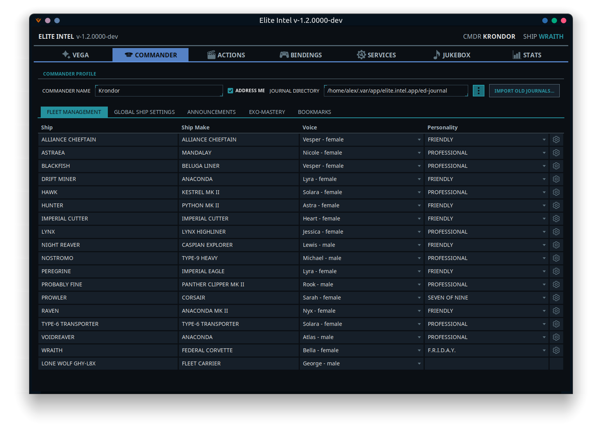
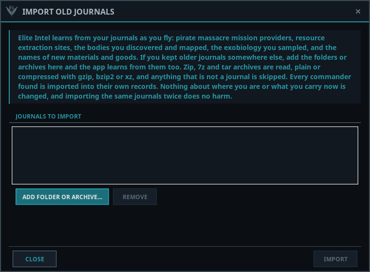
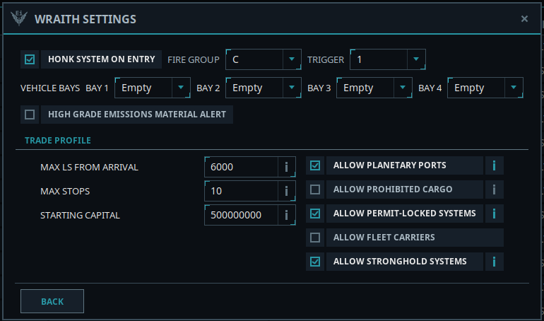
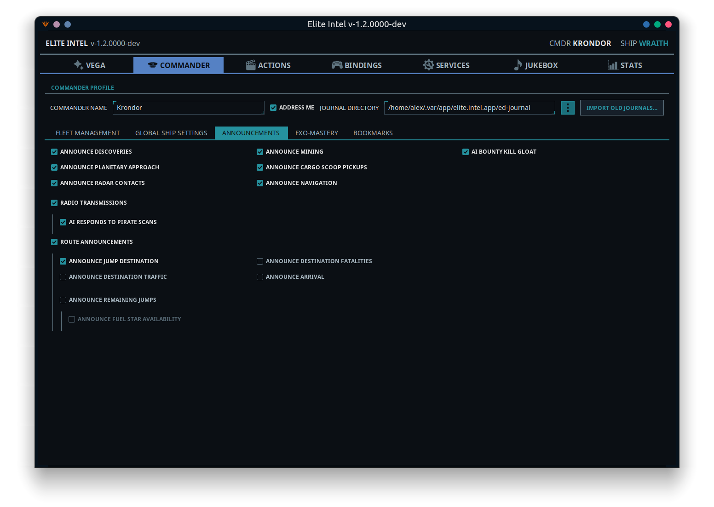
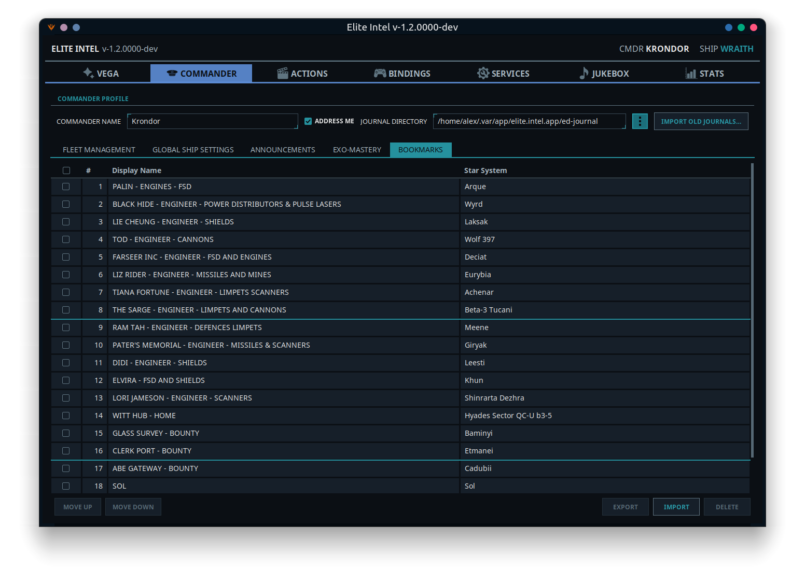

Pestaña Comandante
 Quién eres, con qué
voz habla cada casco de tu flota, qué hace tu nave por ti automáticamente, qué te cuenta Vega sin
que se lo pidas, el catálogo de Exo-Maestría y los lugares que has guardado.
Quién eres, con qué
voz habla cada casco de tu flota, qué hace tu nave por ti automáticamente, qué te cuenta Vega sin
que se lo pidas, el catálogo de Exo-Maestría y los lugares que has guardado.

Arriba está la franja Perfil del comandante; debajo hay cinco subpestañas: Gestión de flota, Ajustes globales de nave, Anuncios, Exo-Maestría y Marcadores.
Perfil del comandante
Nombre del comandante — el nombre que Vega usa para ti de vez en cuando. Úsalo si Vega destroza tu nombre del juego o si simplemente prefieres que te llamen de otra forma. Se guarda al pulsar Enter o al hacer clic fuera.
Dirigirse a mí — desactivado, Vega nunca se dirige a ti: ni nombre, ni rango, ni título.
Directorio de Journal — donde Elite Dangerous escribe sus archivos de journal. Opcional: si lo dejas vacío se usa la ubicación estándar de tu plataforma. Así sabe Elite Intel qué ocurre alrededor de tu nave; si está mal, la app queda prácticamente ciega y lo dice al arrancar. Una carpeta inservible se rechaza y se mantiene el ajuste anterior.
La carpeta de bindings está en la pestaña Bindings, en Gestión de bindings.
Importar diarios antiguos

Elite Intel aprende de tus diarios mientras vuelas: quién ofrece misiones de masacre de piratas, los sitios de extracción de recursos, los cuerpos que descubriste y cartografiaste, la exobiología que muestreaste y los nombres de materiales y mercancías nuevos. Si guardaste diarios antiguos en otro sitio, o acabas de instalar Elite Intel, Importar diarios antiguos… le enseña también con ellos.
Pulsa Añadir carpeta o archivo…, añade tantos como quieras y pulsa Importar.
- Se leen archivos zip, 7z y tar, sin comprimir o con gzip, bzip2 o xz. Los RAR no se pueden leer; vuelve a empaquetarlos como zip o 7z.
- Lo que no sea un diario se omite, y un archivo dañado se lee hasta el daño.
- Cada comandante encontrado se importa en sus propios registros.
- No cambia nada sobre dónde estás o qué llevas ahora, e importar los mismos diarios dos veces no hace daño.
Al terminar, un resumen indica cuántos diarios se leyeron y qué se aprendió. Si cancelas, se conserva todo lo aprendido hasta entonces.
Gestión de flota
Una fila por cada nave que posees, seguida de tu nave nodriza y tu nave nodriza de escuadrón, si las tienes. Elite Intel descubre tu flota a partir del journal del juego; nunca añades naves a mano. Si juegas con varios comandantes en un mismo PC, la lista sigue al comandante cargado en el juego.
| Columna | Notas |
|---|---|
| Nave | El nombre de tu nave (para una nave nodriza, su nombre e indicativo) |
| Modelo de nave | El tipo de casco, o Nave nodriza / Nave nodriza de escuadrón |
| Voz | Haz clic para elegir. Al cambiarla se reproduce enseguida una frase con esa voz para que la escuches |
| Personalidad | Profesional · Casual · Amigable · Desquiciado · Seven of Nine · F.R.I.D.A.Y. · Mercenario bocazas · Tu ex novio · Tu ex novia · Rebelde |
| ⚙ | Abre los ajustes de esa nave (ver abajo) |
Sobre la lista de voces. Se ofrecen todas las voces del motor de voz elegido en Servicios → Servicios de IA, masculinas y femeninas — la voz que elijas también decide si Vega habla de sí misma en masculino o en femenino en esa nave.
- Supertonic 3 (local) — 45 voces, por nombre y género. Cada voz habla todos los idiomas. Una nave nueva recibe a Lily hasta que elijas otra. Puedes ajustar cada voz con Ajuste de voces.
- Google (nube) — etiquetadas como
Nombre - acento · HDo· Estándar. En inglés, el acento distingue las voces. En cualquier otro idioma cada voz se sintetiza en ese idioma, así que la etiqueta muestra el género y el nivel de calidad en lugar de un acento inglés engañoso.
Cambiar el motor de voz restablece la voz de cada nave a la predeterminada del nuevo motor. Las personalidades se conservan. La app pregunta antes de hacerlo.
Las filas de naves nodriza solo tienen voz — Vega no tripula una nave nodriza, así que no tiene personalidad ni ajustes. La voz es la con la que responde su control de tráfico por radio. Déjala en Aleatoria y cada vez responde un controlador distinto; si eliges una, la prueba suena como una transmisión de radio, porque es la única forma en que la oirás.
Ajustes de nave (el botón ⚙)
Ajustes por nave, porque una Python minera y una Corvette de combate no quieren el mismo comportamiento. Los cambios se guardan al cerrar el diálogo con Atrás.

Hacer honk del sistema al entrar — lanza un escaneo de descubrimiento al llegar a un sistema. Elige el Grupo de fuego (A–H) y el Disparador (1 o 2) donde va montado tu escáner de descubrimiento. Si tu HUD está en modo combate, Elite Intel cambia a análisis, escanea y vuelve.
Bahías de vehículos — lo que guardas en cada bahía del hangar de vehículos (Bahía 1–4: Vacía, Scarab, Scorpion o Rhino). El journal del juego nombra el hangar pero nunca su contenido, así que así es como «desplegar SRV» abre la bahía correcta — y sabe si la nave debe aterrizar antes (Scarab, Scorpion) o puede quedarse suspendida (Rhino). Siempre se muestran las cuatro bahías, sea cual sea el hangar instalado, para que tus elecciones sobrevivan a un cambio de equipamiento.
Aviso de materiales en emisiones de alto grado — te avisa cuando una señal de emisiones de alto grado en el sistema lleva materiales por los que vale la pena parar.
Perfil comercial — las restricciones que Elite Intel respeta al trazar una ruta comercial para esta nave. Todas se pueden fijar también por voz: «cambiar máximas paradas del perfil comercial cuatro».
| Ajuste | Significado |
|---|---|
| Permitir puertos planetarios | Incluir puertos de superficie en las rutas |
| Permitir carga prohibida | Incluir carga que es ilegal en algún punto de la ruta |
| Permitir sistemas bloqueados por permiso | Incluir sistemas que necesitan permiso |
| Permitir Fleet Carriers | Incluir naves nodriza de jugadores como mercados |
| Permitir sistemas Stronghold | Incluir sistemas bastión thargoides/de poder |
| Máx. Ls desde la llegada | A qué distancia de la estrella de llegada puede estar una estación |
| Máx. paradas | Número de tramos de la ruta |
| Capital inicial | Créditos que el planificador puede gastar |
Cómo se vuelan las rutas: Comercio y beneficios.
Ajustes globales de nave
Automatizaciones que Vega realiza por ti, en todas las naves. Cada una es un interruptor que se guarda al instante. Útiles para todos, y una verdadera ayuda para comandantes con discapacidad.
| Interruptor | Qué hace |
|---|---|
| Acelerar automáticamente para FTL | Da empuje antes de un salto |
| Apagar luces automáticamente para FTL | Apaga las luces de la nave antes de un salto |
| Desactivar visión nocturna automáticamente para FTL | Quita la visión nocturna antes de un salto |
| Retraer anclajes automáticamente para FTL | Retrae las armas antes de un salto |
| Subir tren de aterrizaje automáticamente para FTL | Sube el tren antes de un salto |
| Retraer cargo scoop automáticamente para FTL | Retrae el cargo scoop antes de un salto |
| Subir tren automáticamente al despegar | Sube el tren tras despegar |
| Apagar luces automáticamente al desplegar SRV | Apaga las luces al desplegar el SRV |
| Trazar la siguiente ruta de neutrones al impulsar en el cono | En una ruta de neutrones, traza el siguiente punto de neutrones en cuanto atraviesas el cono con el impulso |
Anuncios
Todo lo que Vega dice sin que se lo pidas, en un solo lugar — una única pantalla que revisar cuando algo habla demasiado, o demasiado poco.

| Interruptor | Qué oyes |
|---|---|
| Anunciar descubrimientos | Cuerpos notables, primeros descubrimientos, señales biológicas. También controla la tarjeta de Exobiología del overlay HUD |
| Anunciar aproximación planetaria | Datos del cuerpo al que te aproximas |
| Anunciar contactos de radar | Naves que aparecen en el escáner |
| Anunciar minería | Impactos de prospector y hallazgos para tus objetivos de minería |
| Anunciar recogidas del cargo scoop | Lo que acabas de recoger |
| Anunciar navegación | Eventos de navegación y llegadas |
| Transmisiones de radio | Charla de radio del juego, con voces de radio propias |
| La IA responde a escaneos piratas | Vega contesta cuando un pirata escanea tu carga |
| La IA se regodea con las bajas por recompensa | Vega se regodea con las bajas por recompensa |
| Anuncios de ruta | Interruptor principal de todo lo que se dice alrededor de un salto. Los de debajo solo funcionan mientras está activado |
| ↳ Anunciar el destino del salto | Cuál es el siguiente sistema |
| ↳ Anunciar el tráfico del destino | Informes de tráfico de tu destino |
| ↳ Anunciar las bajas del destino | Muertes recientes en el sistema de destino |
| ↳ Anunciar la llegada | Una frase al llegar |
| ↳ Anunciar los saltos restantes | Saltos que quedan en la ruta |
| ↳ Anunciar disponibilidad de estrella de combustible | Si el destino tiene una estrella recolectable — se dice dentro de la frase de saltos restantes |
La mayoría también se puede cambiar por voz («desactiva los anuncios de radar», «desactiva todos los anuncios»), por eso la página los vuelve a leer cada vez que abres la pestaña.
Exo-Maestría
Un catálogo de sistemas estelares cerca de la burbuja cuyos planetas albergan exobiología de alto valor, recopilado por la comunidad a través de Spansh.
- Pulsa Activar Exo-Maestría. El catálogo se descarga y se importa, cada mitad con su propia barra de progreso.
- Una vez cargado, la página muestra Sistemas estelares, Planetas y lunas, el Valor previsto de todo el catálogo y cuánto has Cosechado.
- En vuelo, di «llévame al siguiente sitio de exobiología» y Vega traza un rumbo al sistema más rico que aún no hayas agotado.
Los planetas que terminas se marcan al escanear. Lo que muestreaste antes de instalar Elite Intel se puede dar por hecho por voz — «ya hemos muestreado este cuerpo», o para todo un sistema, «marcar este sistema como cosechado».
Desactivar Exo-Maestría elimina el catálogo de tu ordenador, tras preguntar. Los planetas que ya muestreaste quedan registrados, así que reactivarlo más adelante no te enviará de vuelta a ellos.
Marcadores

Lugares a los que quieres volver: un sistema estelar, una estación, un puerto planetario, un planeta o un punto de su superficie. Cada comandante tiene su propia lista.
Di «guarda este lugar» para guardar dónde estás. Todo lo demás también se puede hacer por voz, usando el número de la lista:
| Di | Qué ocurre |
|---|---|
| «Muestra los marcadores» | Pone la lista numerada en el overlay HUD. Nunca se lee en voz alta |
| «Página siguiente» / «página anterior» | Pasa las páginas de la lista en el overlay |
| «Navega al marcador 3» | Traza una ruta hasta allí |
| «Borra el marcador 3» | Lo elimina |
| «Cierra los marcadores» | Quita la lista del overlay |
La pestaña muestra la misma lista en el mismo orden, con su Nombre visible y Sistema estelar.
- Haz doble clic en una fila para ver todo lo que se sabe del lugar y renombrarlo. El nombre que elijas es el que muestra el overlay y el que usa Vega.
- Subir / Bajar (o Alt+Arriba / Alt+Abajo) mueven la fila resaltada. Una línea entre filas marca dónde termina una página del overlay y empieza la siguiente.
- Exportar y Eliminar actúan sobre las filas marcadas.
- Importar añade marcadores de un archivo exportado al final de tu lista. Nunca la sustituye, y cada entrada se marca como Nuevo, Duplicado o No válido antes de confirmar.
Community 👉Matrix👈